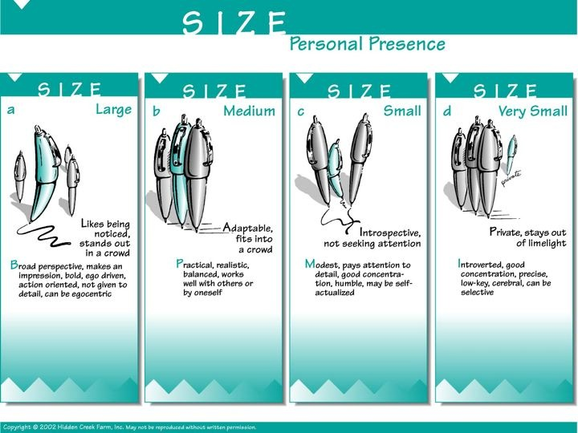
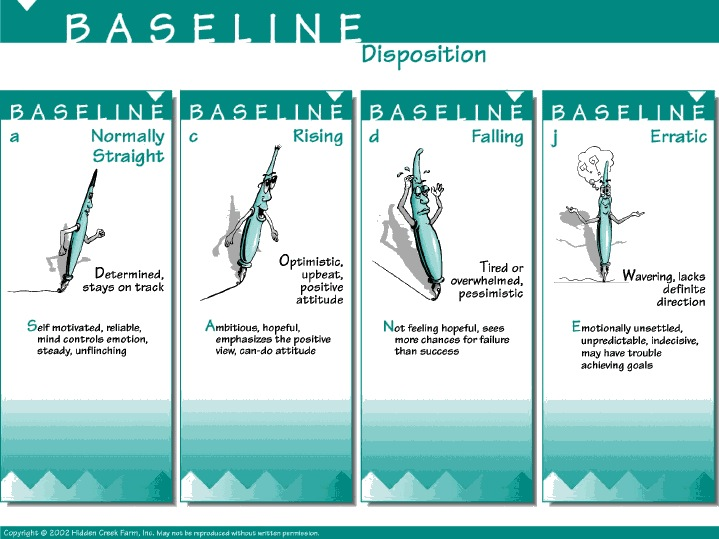
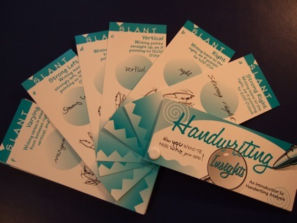

Free Basic Handwriting Analysis Course
Take
this course and you will learn basic handwriting analysis
principles and three writing traits: Size, Slant, and
Baseline.
Before
you start the
course, you should create a writing sample of your own
handwriting. Get a piece of unlined paper and, using a
black ink pen, write a few sentences, then sign and date
it.
INTRODUCTION
Handwriting
is a form of
expressive movement -
it is our movement frozen on paper.
There
are lots of ways that we observe how people express
themselves. When we talk with someone on the telephone we
not only listen to what the person is saying, we listen
to
how they
are saying it: their tone, speed, inflection, emphasis,
hesitations, loudness, and many other things. Some studies
have shown that over 80% of verbal communication is
how something
is said, and so we have learned to listen to these signals.
When we are talking with someone in person, again we not
only listen to what they are saying, but how they are
saying it. Additionally, we look at their body language. We
notice how close they stand, if their arms are crossed, if
their eyes are wandering, and so on.
When we look at handwriting, there is the message conveyed
by what was written, but there is also a message in
how the
writing was done: what is the size, slant, pressure, speed,
etc. Once you know the basics of handwriting analysis, the
writing will reveal to you aspects of the personality of
the writer. A personality quiz asks you questions about
yourself to determine who you are, but for the handwriting
analyst, there are not questions that need to be asked -
you just look at the writing!
Basic Concepts for Analyzing Handwriting
•
In school, we are all taught to write the same way. How we
choose to vary our writing is a result of our individual
and unique personalities. If you are having doubts about
this, just look at the signatures at the bottom of the
Declaration of Independence here.
•
Different writing characteristics are called handwriting
indicators or writing traits. Examples include writing
size, slant, and pressure. No single indicator totally
defines a person. The interpretations of all indicators
must be considered together. However, a strong personality
trait will show up again and again in a person's
handwriting.
•
The more indicators you look at, the clearer your
understanding of the writer will be. In this very basic
course we look at three major indicators, and there are 11
in the Handwriting Insights Kit. A professional
graphologist looks at hundreds of
indicators.
•
An ideal writing sample is written spontaneously in ink on
unlined paper written with a pen, and signed and dated by
the writer. But a sentence or two with a signature, or a
signature alone, is enough for the purposes of this basic
analysis.
•
A lot of handwriting analysis is common sense and basic
correlation. People who dot their "i's" and cross their
"t's" precisely tend to be more meticulous than those who
don't. Stylish people often have stylish writing, and so
on. A lot of what you'll learn in handwriting analysis
won't surprise you at all.
•
Whereas
handwriting represents
how a person feels privately (their true personality), the
person's
signature represents
the public image that the writer wants to project.
Therefore, a big difference between a person's writing and
their signature indicates a big the difference between
their private and public self. When the writing and the
signature are identical, then "what you see is what you
get" and the person presents themself identical to how they
feel inside.
•
This course applies to the handwriting of people 12 years
and older.
Size
The
size of
the writing indicates the writer's desire to be
noticed.
The
information below is directly taken from Handwriting
Insights - here are what the different writing sizes
indicate. To print these two sheets click
Size-Front,
and Size-Back.

By
just knowing SIZE and knowing that a signature represents
our "public image" and how we write represents how we feel
privately, we can learn something about the writers of the
examples below.
a)
Small writing with a Large signature
This
person is spending significant energy to overcome their
private quiet nature and to be noticed. The gap in the
size, from small writing to large signature, indicates a
big difference between how this person feels inside (a more
private personality) and how they present them self (a
personality who gets attention).
b)
Small writing with a small signature
Often
found in the writing of person with good concentration and
possibly introverted. When I work with a person like this I
make sure that I have all my facts in order to the last
detail, because they pay attention to
details.
c)
Medium writing with Large Signature
It
is rather common for people to sign their name a little
larger than they normally write, and this indicates putting
a little effort out there to be noticed.
A
friend of mine was complaining that his girlfriend didn't
like going out with groups of people as much as he did. He
said that "she wasn't trying hard enough." We looked at his
writing (very large, with a large middle zone which you
will learn about later but indicates people interaction is
a strength) and her writing (very small) and concluded that
given her private more introverted nature it is a lot
harder for her than for him to interact with groups of
people.
Go
look at some writing samples and see for yourself what you
find out!!!
******************
Slant
The
Slant of writing indicates the writer’s emotional
interactions.
The
information below is directly taken from Handwriting
Insights - here are what the different writing sizes
indicate. To print these two sheets click
Slant-Front,
and Slant-Back.
Here
are what the different slants of writing
mean.
Now,
so far considering Slant and knowing that a signature
represents our "public image" and how we write represents
how we feel privately, lets apply this to a few
cases.
a)
Left slant writing with a right slant signature
This
person is privately a more reserved person, but they are
giving the appearance of being more socially outgoing. You
can be sure that inside they are carefully not nearly as
spontaneous and outgoing as they appear.
b)
Strong right slant on writing with a vertical slant on the
signature -
This
person has an intense personality, but they give the
appearance of being more analytical and reserved. They have
learned to control their intense nature in the public eye.
As you get to know the person better, you would get to see
this other side of them.
c)
Small vertical writing with large, right slant
signature
Here
the writer has an analytical mind with attention to detail,
and is presenting an image of a commanding presence and
interpersonal skills. Although this person appears to be
outgoing and socially very comfortable, inside they are
feeling more reserved and private.
See
how easy it is to combine the traits to understand people
better. Remember, we are only looking at a few traits, and
there may be other aspects of the writing that contradicts
it. Each trait is a piece of the puzzle.
Now
let's think about what it means if your slant and the slant
of a friend of yours differs.
a)
Your slant is strong right, and your friend is strong
left
Be
careful, as you plow ahead on things, that you take a
little extra time to check in with your friend and see that
they really agree. Understand that even though they may not
react on the surface to something with the intensity that
you do, it does not mean they do not feel it deeply
inside.
b)
Your slant is right, and your friend is
vertical
If
you are making a decision keep in mind that right slanted
writers tend to me more impulsive, and that the vertical
writer may need a little extra information to satisfy their
analytical nature.
******************
Baseline
An
important factor in judging the writer's emotional
stability and disposition is the baseline of the writing.
The baseline is the actual line upon which letters are
written. On unlined paper, the baseline is assumed by the
writer. However, even on lined paper the writer does not
always adhere to the line provided. The baseline changes
based on the immediate mood of the writer and can vary from
day to day or moment to moment. Because of this, any
interpretation derived from baseline should be prefaced by
the phrase "at this time". In the Handwriting Insights
slide deck there are 10 different variations covered. These
are the four most common baselines.
The
information below is directly taken from Handwriting
Insights - here are what the different writing sizes
indicate. To print these two sheets click
Baseline-Front,
and Baseline-Back.
Here
are what the different baselines
indicate.

Remember,
when the writing matches the signature (in slant,
size, baseline, etc.) then "what you see is what you
get." Now, considering that the writing represents how
we feel privately, and our signature is our public
image, let's look at some examples where the baseline
of the writing does not match the baseline of the
signature.
a)
Descending baseline on writing, ascending baseline on
signature
This
is something that I bet you will see surprisingly often. It
indicates that the writer is acting upbeat while inside
they are feeling overwhelmed, tired, or pessimistic. Most
of us want to put on a good face for the world to see. It
is nice that the writer gives us this clue that they may
need more support and encouragement.
b)
Normally Straight baseline on writing, ascending baseline
on signature
Again,
you will see this fairly often. It indicates that the
writer is fine, however they choose to act even more upbeat
than they feel inside.
***************
With
the Handwriting Insights Deck you can look at eight more
handwriting indicators.
Experience the thrill of analyzing handwriting! Entertain
family and friends by showing them what their handwriting
reveals.
Handwriting
Insights is a high quality deck of 64 connected,
illustrated cards that teaches you handwriting analysis as
you use it. Analyze handwriting in 5 minutes. Results are
worded constructively so people feel good about what you
have to say.

We
are closing out our inventory. While supplies last you can
order your kit
Book Clearing House
for only $10.95.
Or, if you prefer to order over the telephone you can call
Book Clearing House
In the United States, dial toll-free: (800)
431-1579.
International
customers, please call: (914) 835-0015.
Click here to go to to Part 2
of this free course for examples of using Handwriting
Insights on some famous handwriting
samples.
***Disclaimer
- This information is intended as amusement only. The
author and Hidden Creek Farm, Inc. hereby waive any
liability associated with one's use of this information in
performing such analysis on any handwriting
sample.***
Copyright
2004 Hidden Creek Farm, Inc. All rights
reserved.